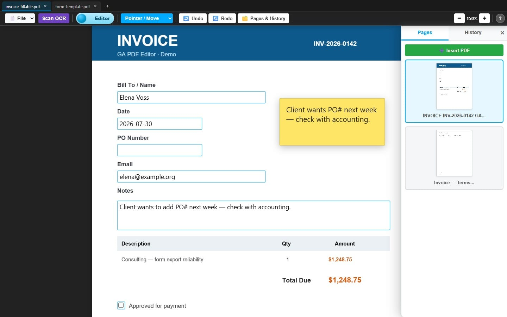
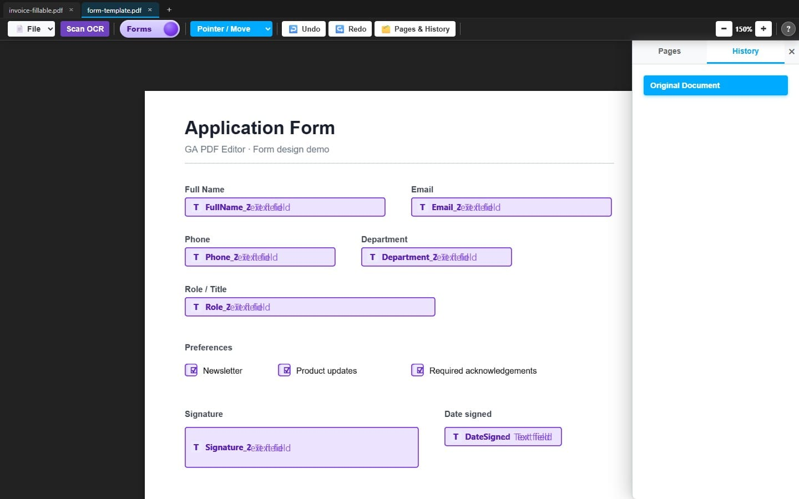
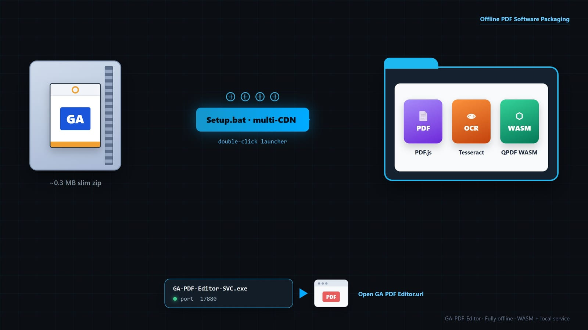

GA PDF Editor is an offline-first PDF workstation that runs in the browser: annotate, fill and design AcroForms, run local OCR, save projects, and export honest PDFs — all as static files, no server round-trip required for the document itself. Offline matters because your document bytes stay on the machine: open from a USB stick or localhost, work without a cloud account, and never upload sensitive PDFs “just to edit them.”

Hi. Short field journal this time — multi-tabs, dual form layers, instruction-tape undo, export that doesn’t lie, and a zip so small it feels like a prank. Grab tea. There will be AcroForms. There will be feelings. There may be a missing semicolon.
Not “I put a PDF on a canvas and shipped it.” A little desktop-class PDF workstation that still ships as boring static files — scribble, fill, design fields, OCR, project save, export Adobe won’t laugh at — without yeeting documents into the cloud.
.gapdf projects · honest final PDFsconfig.js load order + ?v= cache-bust. Old school. Kind of proud.For S’s and G’s: a tidy inventory of what the workstation actually does. Combine PDFs for free. Drag pages around. Design fillables. OCR a scan. No cloud upsell, no “three free merges then please subscribe.” The world is your oyster — or clam, or whichever bivalve you’re comfortable shipping on a USB stick.
.gapdf projects (multi-select OK)file:// via base64 embeds after setup?).gapdf saves.gapdf) — real PDF + gzip JSON trailer (overlays, form state)Setup.batTired of AI mockups that looked like a cousin of the app. Live localhost + Puppeteer + tiny demo PDFs. Click to zoom. Yes, that is the real purple OCR button.


Setup.bat.
Shots from dev/case-study/demos/ · packaging panel is a diagram, not my desktop chaos.
I planned “tabs would be nice.” Then forms export ate a week and I started naming cache-bust
slugs like war medals. Product version = VERSION. Chaos version = config.js slug.
Spoilers under the fold — expand if you like semver fanfic.
1.2.0 — one config.js, multi-doc workspace, IndexedDB, install-only SW,
launch_handler: focus-existing so double-clicks don’t birth twins.
1.2.1–1.2.3 — tools only worked on tab 1 because I bound listeners to the original
#viewer like a medieval peasant. Fixed with workspace-root delegation and PDF-byte caching.
Rite of passage: works on my machine (where I only ever opened one tab).
1.3.0 — replaced “stack of closures that captured the DOM and my tears” with opcodes + payloads. Undo = invert. Macro-only commits — no mousemove seismograph.
1.3.6–1.3.9 — deleted fields resurrected via copyPages smuggling /Widget annots;
CSS pointer-events: none on the form stencil (classic “I told the box it doesn’t exist”);
pdf-lib’s private form cache hugging a ghost AcroForm that never serializes.
1.4.0 — snapshot shells → strip hard → brand-new AcroForm → write fields. Flat names.
1.4.1 — console poem of the year: wrote widgets=0 failed=N form.getFields()=N.
Fields in the dictionary, zero page widgets a human can click.
1.4.2 — setTimeout(100) is not a strategy; it’s a coin flip. Apply project data immediately; repair passes when layers paint.
1.5.0–1.5.1 — folder reorg so an adult appears to live here; OCR scoped to the active tab (boundaries!).
1.5.2–1.5.3 — slim package + multi-CDN setup, sticky-port SVC, this essay so future-me doesn’t re-learn orphan form caches from first principles.
| Domain | What shipped |
|---|---|
| Multi-doc UI | VS Code–ish tabs; per-doc viewer/zoom/history; restore via handles + PDF bytes in IndexedDB. |
| Annotations | Text, shapes, tables, images, snip, signatures — drag/resize/rotate, snap, group marquee. |
| Fillable forms | Fill natives in Editor; design shells in Forms; export re-embeds widgets at designer geometry. |
| History | Instruction tape (GaProcessor). Undo is data, not a haunted closure. |
| OCR · security | Offline Tesseract (active tab); optional AES via QPDF WASM without murdering fillables. |
| Ship · origin | Slim zip + Setup.bat; SVC on sticky localhost for PWA without admin cosplay. |
PDF.js owns pixels + native widgets. The DOM overlay owns “what I meant when I dragged that box.” Export is a reconciliation ceremony — not a live two-way binding on every mousemove (that way lies 60fps regret).
Shell: index.html + config.js (?v=)
Tabs → GaWorkspace → .doc-viewer panes
PDF.js canvas/text/annotation layers
DOM overlays (text/shape/form shells)
Interaction (mouse/drag/keys)
│
▼
GaProcessor.commit(inst) → history tape + audit
│
▼
Export: copyPages → strip Widgets → embed designers → (opt) QPDF
.gapdf: same PDF half + gzip schema trailer
Several of these bugs had my full name in the stack trace. Expand only the trauma you need.
All collapsed by default — skimmers stay free.
Tools only worked on tab one. Listeners bound once to the original #viewer; new panes never got the memo. Tab 2: beautiful. Also: mute.
Lesson: bind high, resolve the live pane — preferably before demo day.
PDF.js paints interactive AcroForms; designers need movable shells. Hide natives too hard → fill vanishes. Leave both → double fields and the legendary “flash then gone.”
Lesson: two jobs, two modes (Editor fill vs Forms design) — not one boolean named formsAreOnIGuess.
copyPages brings page /Widget annots even when the high-level form API looks empty. Deleted fields paid rent and came back.
Lesson: strip at the page Annots level. form.removeField() alone is a polite suggestion.
[embedAllFormFields] wrote widgets= 0 failed= 4 form.getFields()= 4
Four fields on the AcroForm object. Zero page widgets. Usually addToPage threw after createTextField already “succeeded.” Bonus: strip catalog /AcroForm while the private form cache still hugs an orphan.
Lesson: count widgets on pages. Fresh form after strip. Never pass NaN geometry to a library that believes you.
Project restore via setTimeout(100), global getElementById across tabs, import gated on annotation CSS that hadn’t painted. Symptom: “works… unless you refresh. Or breathe wrong.”
Lesson: await render. Scope queries. Sleep is not a dependency.
Tesseract and QPDF want workers/WASM. file:// laughs at fetch. One CDN’s DNS ghosted mid-setup. Our “custom” qpdf was a normal npm package in a trench coat (SHA matched; I felt both smart and scammed).
Lesson: base64 embeds, multi-mirror setup, never marry one CDN.
Installed PWA = married to http://127.0.0.1:PORT. Silently hopping ports orphans the install. Auto-opening a browser at logon makes users think malware invented a PDF editor.
Lesson: sticky port from the .url; MessageBox if busy; boot stays quiet. Be boring. Be loved.
Tricks, form lifecycle, and the instruction tape — still here for archaeology, not required for the tour.
body.capture-safe — export/print don’t bake Form-mode dimming into pixels forever.ga_ prefix against zombie names.*.embed.js — workers/WASM/traineddata that work on file://.| Layer | When | Boss |
|---|---|---|
| PDF.js AnnotationLayer | Editor fill | PDF bytes (until we manage + strip) |
.formFieldOverlay |
Forms design + export geometry | DOM + project schema |
Open fillable → paint natives → import designer twins
User moves shells → DOM geometry is truth
Export → copyPages 👻 → strip Widgets hard → new AcroForm
→ embed from designer snapshot → save
Reopen → applyProjectData now (no 100ms vibes) → repair if short count
Tattoo this: “visible in the editor” must mean “serializable from the DOM.” If export can’t see shells, pdf-lib cannot telepathically invent them.
Early me loved { undo, redo } closures. They captured live elements, refused to serialize, and fought multi-tab restore like cats in a bag.
GaProcessor: opcode + payload. Undo inverts. Redo replays. Command pattern wearing a hoodie.
CREATE_NODE / DELETE_NODE · COMMIT_TRANSFORM(S)SET_STYLE / SET_INNER_HTML / SET_TEXT_STATECOMPOUND · LEGACY_CLOSURE (escape hatch; console side-eyes you)House rule: no instructions on mousemove. The tape stays readable.
Setup.batlib/* + empty fontstools/setup.ps1 + manifest + this rantOne-time setup pulls vendors (multi-CDN), fonts, file:// embeds; optional start-on-boot. No Node on every desk.
127.0.0.1 only — stable PWA origin17880; sticky from .urlchdir to EXE dir so Startup finds ./appHKCU\...\Run are non-admin too. If setup asks for UAC just for this, someone wrote the wrong script.
dev/ exist so the next person doesn’t re-learn stencil pointer-events from first principles.?v= is a lifestyle.pointer-events: none on the thing you then try to drag — gaslighting yourself with CSS.fix, then fix 2, then please, then a real message after shame.
You can shove a static, offline-capable web app surprisingly far toward “real PDF software” —
if you respect PDF structure, treat the DOM as an editor canvas with an honest export step,
and treat packaging like part of the product. The hard parts were never “draw a box.”
They were truth, timing, and transport.
Thanks for reading the nerd diary. Go make a fillable form. Or a sticky note. Or both. ♥
{kind=link}
{kind=link}
{kind=link}